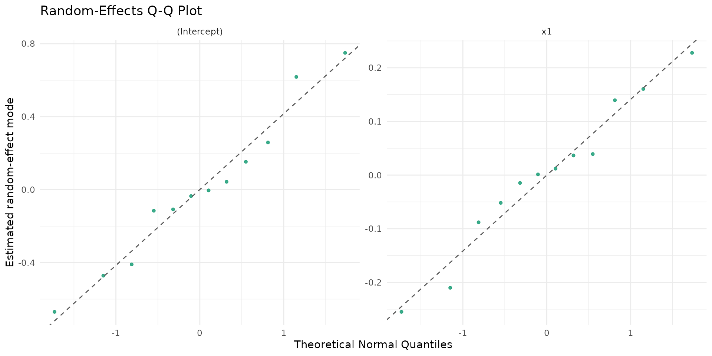
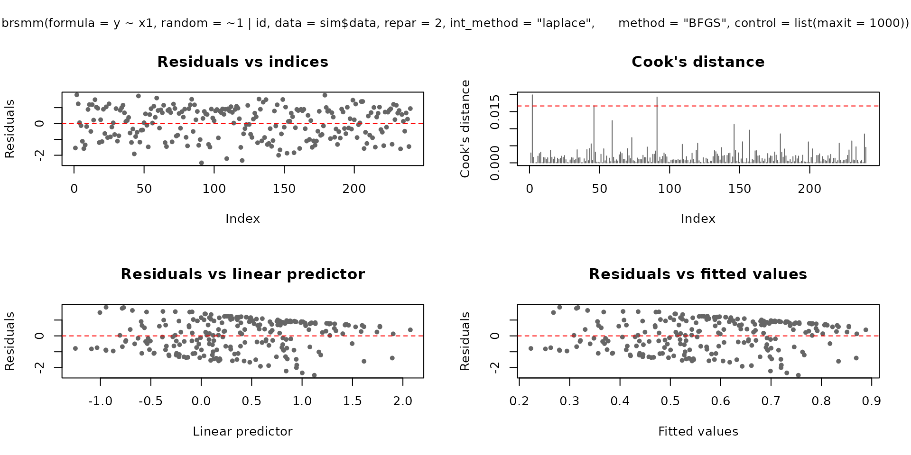
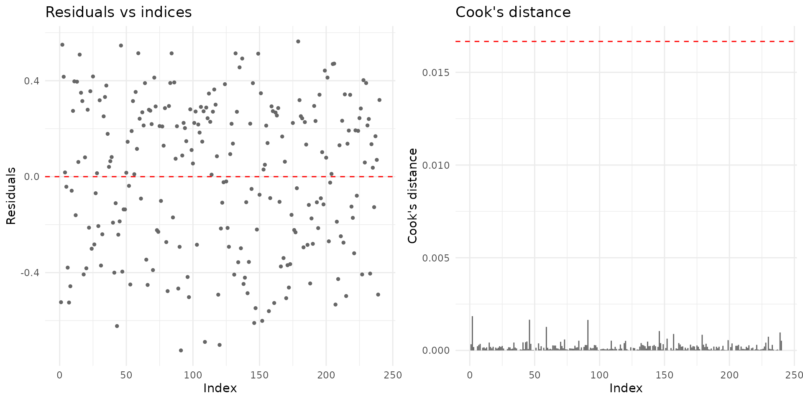
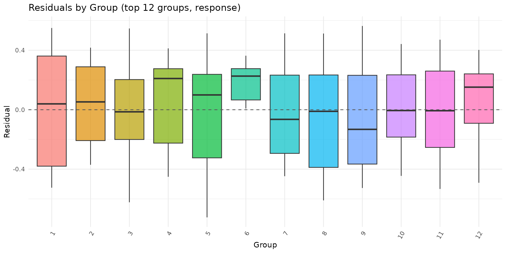

Overview
brsmm() extends brs() to clustered data by
adding Gaussian random effects in the mean submodel while preserving the
interval-censored beta likelihood for scale-derived outcomes.
This vignette covers:
- full model mathematics;
- estimation by marginal maximum likelihood (Laplace, adaptive quadrature or quasi-Monte Carlo);
- practical use of all current
brsmmmethods; - inferential and validation workflows, including parameter recovery.
Mathematical model
Assume observations within groups , with group-specific random-effects vector .
Linear predictors
with
and
chosen by link and link_phi. The
random-effects design row
is defined by random = ~ terms | group.
Beta parameterization
For each
,
repar maps to beta shape parameters
via brs_repar().
Conditional contribution by censoring type
Each observation contributes:
where are interval endpoints on , is beta density, and is beta CDF.
Random-effects distribution
where
is a symmetric positive-definite covariance matrix. Internally,
brsmm() optimizes a packed lower-Cholesky parameterization
(diagonal entries on log-scale for positivity).
Laplace approximation used by brsmm()
Define and , with curvature Then
brsmm() maximizes the approximated
with stats::optim(), and computes group-level posterior
modes
.
For
,
this reduces to the scalar random-intercept formula.
Other integration methods and estimation details
-
int_method = "aghq": adaptive Gauss-Hermite quadrature withn_pointsnodes per dimension, placed at with the symmetric square root (n_pointsnodes in total, at most 500000). -
int_method = "qmc": importance sampling from withqmc_pointsHalton points. It is deterministic and, with two or more random effects, underestimates the log-likelihood (about at 1024 points); prefer"aghq"for up to three random effects.
The inner mode is found by a Levenberg-Marquardt Newton method,
warm-started from the previous evaluation (the cache is cleared at the
start of each fit). A group whose curvature is not positive definite at
its mode adds the penalty value, and brsmm() warns when
that happens at the estimate. optim() receives the compiled
gradient of the chosen approximation (chain rule on the linear predictor
and implicit-function theorem at the modes), and the Hessian behind
vcov() is a Richardson central difference of that gradient
(hessian_method = "cpp").
Simulating clustered scale data
The next helper simulates data from a known mixed model to illustrate fitting, inference, and recovery checks.
sim_brsmm_data <- function(seed = 3501L, g = 24L, ni = 12L,
beta = c(0.20, 0.65),
gamma = c(-0.15),
sigma_b = 0.55) {
set.seed(seed)
id <- factor(rep(seq_len(g), each = ni))
n <- length(id)
x1 <- rnorm(n)
b_true <- rnorm(g, mean = 0, sd = sigma_b)
eta_mu <- beta[1] + beta[2] * x1 + b_true[as.integer(id)]
eta_phi <- rep(gamma[1], n)
mu <- plogis(eta_mu)
phi <- plogis(eta_phi)
shp <- brs_repar(mu = mu, phi = phi, repar = 2)
y <- round(stats::rbeta(n, shp$shape1, shp$shape2) * 100)
list(
data = data.frame(y = y, x1 = x1, id = id),
truth = list(beta = beta, gamma = gamma, sigma_b = sigma_b, b = b_true)
)
}
sim <- sim_brsmm_data(
g = 12,
ni = 20,
beta = c(0.20, 0.65),
gamma = c(-0.15),
sigma_b = 0.55
)
str(sim$data)
#> 'data.frame': 240 obs. of 3 variables:
#> $ y : num 0 83 99 56 65 10 8 1 65 98 ...
#> $ x1: num -0.3677 -2.0069 -0.0469 -0.2468 0.7634 ...
#> $ id: Factor w/ 12 levels "1","2","3","4",..: 1 1 1 1 1 1 1 1 1 1 ...Fitting brsmm()
fit_mm <- brsmm(
y ~ x1,
random = ~ 1 | id,
data = sim$data,
repar = 2,
int_method = "laplace",
method = "BFGS",
control = list(maxit = 1000)
)
summary(fit_mm)
#>
#> Call:
#> brsmm(formula = y ~ x1, random = ~1 | id, data = sim$data, repar = 2,
#> int_method = "laplace", method = "BFGS", control = list(maxit = 1000))
#>
#> Randomized Quantile Residuals:
#> Min 1Q Median 3Q Max
#> -2.7630 -0.6319 0.0210 0.7206 3.5456
#>
#> Coefficients (mean model with logit link):
#> Estimate Std. Error z value Pr(>|z|)
#> (Intercept) 0.36831 0.15429 2.387 0.017 *
#> x1 0.63301 0.09467 6.687 2.29e-11 ***
#> ---
#> Signif. codes: 0 '***' 0.001 '**' 0.01 '*' 0.05 '.' 0.1 ' ' 1
#>
#> Phi coefficients (precision model with logit link):
#> Estimate Std. Error z value Pr(>|z|)
#> (Intercept) -0.15937 0.08476 -1.88 0.0601 .
#> ---
#> Signif. codes: 0 '***' 0.001 '**' 0.01 '*' 0.05 '.' 0.1 ' ' 1
#>
#> Random effects (SD and Corr; 95% Wald CI on the log / atanh scale; no tests, see anova()):
#> Estimate Lower Upper
#> SD (Intercept) 0.4505 0.2538 0.7997
#> ---
#> Mixed beta interval model (Laplace)
#> Observations: 240 | Groups: 12
#> Log-likelihood: -1008.2467 on 4 Df | AIC: 2024.4934 | BIC: 2038.4160
#> Pseudo R-squared: 0.1364
#> Number of iterations: 35 (BFGS)
#> Censoring: 212 interval | 8 left | 20 rightRandom intercept + slope example
The model below includes a random intercept and random slope for
x1:
fit_mm_rs <- brsmm(
y ~ x1,
random = ~ 1 + x1 | id,
data = sim$data,
repar = 2,
int_method = "laplace",
method = "BFGS",
control = list(maxit = 1200)
)
summary(fit_mm_rs)
#>
#> Call:
#> brsmm(formula = y ~ x1, random = ~1 + x1 | id, data = sim$data,
#> repar = 2, int_method = "laplace", method = "BFGS", control = list(maxit = 1200))
#>
#> Randomized Quantile Residuals:
#> Min 1Q Median 3Q Max
#> -2.7933 -0.6492 0.0046 0.6839 3.5337
#>
#> Coefficients (mean model with logit link):
#> Estimate Std. Error z value Pr(>|z|)
#> (Intercept) 0.3533 0.1577 2.241 0.025 *
#> x1 0.6292 0.1057 5.952 2.65e-09 ***
#> ---
#> Signif. codes: 0 '***' 0.001 '**' 0.01 '*' 0.05 '.' 0.1 ' ' 1
#>
#> Phi coefficients (precision model with logit link):
#> Estimate Std. Error z value Pr(>|z|)
#> (Intercept) -0.17469 0.08501 -2.055 0.0399 *
#> ---
#> Signif. codes: 0 '***' 0.001 '**' 0.01 '*' 0.05 '.' 0.1 ' ' 1
#>
#> Random effects (SD and Corr; 95% Wald CI on the log / atanh scale; no tests, see anova()):
#> Estimate Lower Upper
#> SD (Intercept) 0.4635 0.2645 0.8122
#> SD x1 0.1578 0.0415 0.6006
#> Corr x1,(Intercept) -0.9987 -1.0000 1.0000
#> ---
#> Mixed beta interval model (Laplace)
#> Observations: 240 | Groups: 12
#> Log-likelihood: -1007.0655 on 6 Df | AIC: 2026.1309 | BIC: 2047.0148
#> Pseudo R-squared: 0.1364
#> Number of iterations: 32 (BFGS)
#> Censoring: 212 interval | 8 left | 20 rightThe random-effects block of summary() reports standard
deviations and the correlation, with 95% intervals built on the log
scale (SD) and the
scale (correlation) and mapped back; it gives no test. The same numbers
are in summary(fit_mm_rs)$varcorr.
Covariance structure of random effects:
kbl10(fit_mm_rs$random$D)| V1 | V2 |
|---|---|
| 0.2148 | -0.0730 |
| -0.0730 | 0.0249 |
kbl10(
data.frame(term = names(fit_mm_rs$random$sd_b), sd = as.numeric(fit_mm_rs$random$sd_b)),
digits = 4
)| term | sd |
|---|---|
| (Intercept) | 0.4635 |
| x1 | 0.1578 |
| (Intercept) | x1 |
|---|---|
| -0.0039 | 0.0013 |
| 0.2585 | -0.0880 |
| 0.0431 | -0.0146 |
| 0.1528 | -0.0518 |
| -0.0354 | 0.0119 |
| 0.6181 | -0.2101 |
| -0.4100 | 0.1396 |
| -0.1081 | 0.0365 |
| -0.4719 | 0.1606 |
| -0.6702 | 0.2279 |
Additional studies of random effects (numerical and visual)
Following practices from established mixed-models packages, the package now allows for a dedicated study of the random effects focusing on:
- structure and correlation;
- empirical distribution of modes by group;
- empirical shrinkage intensity;
- specific visual diagnostics for the random components.
The intraclass correlation reported by brsmm_re_study()
is the correlation of
between two observations of the same group with the same covariates.
With
and
(mean and variance of
for
,
with the shapes at random effect
),
computed by Gauss-Hermite quadrature
over
and averaged over the observations. It uses the beta level-1 variance:
the logistic value
of binary models does not describe a beta response. The moments of
can be infinite (probit link with
,
cloglog link, or a very large
);
the ICC is then NA with a warning, because its value would
be set by the numerical clamp of the mean.
re_study <- brsmm_re_study(fit_mm_rs)
print(re_study)
#>
#> Random-effects study
#> Groups: 12
#>
#> Random-effects (VarCorr):
#> Name Std.Dev. Corr
#> (Intercept) 0.4635
#> x1 0.1578 -0.9987
#>
#> ICC (logit(Y) scale, beta level-1 variance): 0.1318
#>
#> Summary by term (SD_model = model SD; shrinkage = Var(modes)/Var(model)):
#> term sd_model mean_mode sd_mode shrinkage_ratio shapiro_p
#> (Intercept) 0.4635 6e-04 0.4159 0.8054 0.8381
#> x1 0.1578 -2e-04 0.1414 0.8037 0.8369
kbl10(re_study$summary)| term | sd_model | mean_mode | sd_mode | shrinkage_ratio | shapiro_p |
|---|---|---|---|---|---|
| (Intercept) | 0.4635 | 6e-04 | 0.4159 | 0.8054 | 0.8381 |
| x1 | 0.1578 | -2e-04 | 0.1414 | 0.8037 | 0.8369 |
kbl10(re_study$D)| (Intercept) | x1 | |
|---|---|---|
| (Intercept) | 0.2148 | -0.0730 |
| x1 | -0.0730 | 0.0249 |
kbl10(re_study$Corr)| (Intercept) | x1 | |
|---|---|---|
| (Intercept) | 1.0000 | -0.9987 |
| x1 | -0.9987 | 1.0000 |
Suggested visualizations for random effects:
if (requireNamespace("ggplot2", quietly = TRUE)) {
autoplot.brsmm(fit_mm_rs, type = "ranef_caterpillar")
autoplot.brsmm(fit_mm_rs, type = "ranef_density")
autoplot.brsmm(fit_mm_rs, type = "ranef_pairs")
autoplot.brsmm(fit_mm_rs, type = "ranef_qq")
}
Core methods
Coefficients and random effects
coef(fit_mm, model = "random") returns packed
random-effect covariance parameters on the optimizer scale
(lower-Cholesky, with a log-diagonal). For random-intercept models, this
simplifies to
.
kbl10(
data.frame(
parameter = names(coef(fit_mm, model = "full")),
estimate = as.numeric(coef(fit_mm, model = "full"))
),
digits = 4
)| parameter | estimate |
|---|---|
| (Intercept) | 0.3683 |
| x1 | 0.6330 |
| (phi)_(Intercept) | -0.1594 |
| (re_chol_logsd)_(Intercept)|id | -0.7973 |
kbl10(
data.frame(
log_sigma_b = as.numeric(coef(fit_mm, model = "random")),
sigma_b = as.numeric(exp(coef(fit_mm, model = "random")))
),
digits = 4
)| log_sigma_b | sigma_b |
|---|---|
| -0.7973 | 0.4505 |
| x |
|---|
| -0.0420 |
| 0.2152 |
| 0.0468 |
| 0.2022 |
| -0.0720 |
| 0.6098 |
| -0.3624 |
| -0.1838 |
| -0.4129 |
| -0.6105 |
For random intercept + slope models:
kbl10(
data.frame(
parameter = names(coef(fit_mm_rs, model = "random")),
estimate = as.numeric(coef(fit_mm_rs, model = "random"))
),
digits = 4
)| parameter | estimate |
|---|---|
| (re_chol_logsd)_(Intercept)|id | -0.7690 |
| (re_chol)_x1:(Intercept)|id | -0.1576 |
| (re_chol_logsd)_x1|id | -4.8273 |
kbl10(fit_mm_rs$random$D)| V1 | V2 |
|---|---|
| 0.2148 | -0.0730 |
| -0.0730 | 0.0249 |
Variance-covariance, summary and likelihood criteria
| Estimate | Std. Error | z value | Pr(>|z|) | |
|---|---|---|---|---|
| (Intercept) | 0.3683 | 0.1543 | 2.3872 | 0.017 |
| x1 | 0.6330 | 0.0947 | 6.6865 | 0.000 |
kbl10(sm$varcorr)| term | type | estimate | lower | upper | se_transformed |
|---|---|---|---|---|---|
| SD (Intercept) | sd | 0.4505 | 0.2538 | 0.7997 | 0.2928 |
kbl10(
data.frame(
logLik = as.numeric(logLik(fit_mm)),
AIC = AIC(fit_mm),
BIC = BIC(fit_mm),
nobs = nobs(fit_mm)
),
digits = 4
)| logLik | AIC | BIC | nobs |
|---|---|---|---|
| -1008.247 | 2024.493 | 2038.416 | 240 |
Fitted values, prediction and residuals
kbl10(
data.frame(
mu_hat = head(fitted(fit_mm, type = "mu")),
phi_hat = head(fitted(fit_mm, type = "phi")),
pred_mu = head(predict(fit_mm, type = "response")),
pred_eta = head(predict(fit_mm, type = "link")),
pred_phi = head(predict(fit_mm, type = "precision")),
pred_var = head(predict(fit_mm, type = "variance"))
),
digits = 4
)| mu_hat | phi_hat | pred_mu | pred_eta | pred_phi | pred_var |
|---|---|---|---|---|---|
| 0.5234 | 0.4602 | 0.5234 | 0.0936 | 0.4602 | 0.1148 |
| 0.2801 | 0.4602 | 0.2801 | -0.9441 | 0.4602 | 0.0928 |
| 0.5736 | 0.4602 | 0.5736 | 0.2967 | 0.4602 | 0.1126 |
| 0.5424 | 0.4602 | 0.5424 | 0.1701 | 0.4602 | 0.1142 |
| 0.6920 | 0.4602 | 0.6920 | 0.8096 | 0.4602 | 0.0981 |
| 0.4792 | 0.4602 | 0.4792 | -0.0834 | 0.4602 | 0.1149 |
kbl10(
data.frame(
res_response = head(residuals(fit_mm, type = "response")),
res_pearson = head(residuals(fit_mm, type = "pearson"))
),
digits = 4
)| res_response | res_pearson |
|---|---|
| -0.5234 | -1.5446 |
| 0.5499 | 1.8052 |
| 0.4164 | 1.2410 |
| 0.0176 | 0.0520 |
| -0.0420 | -0.1342 |
| -0.3792 | -1.1188 |
Diagnostic plotting methods
plot.brsmm() supports base and ggplot2 backends:
plot(fit_mm, which = 1:4, type = "pearson")
if (requireNamespace("ggplot2", quietly = TRUE)) {
plot(fit_mm, which = 1:2, gg = TRUE)
}
autoplot.brsmm() provides focused ggplot
diagnostics:
if (requireNamespace("ggplot2", quietly = TRUE)) {
autoplot.brsmm(fit_mm, type = "calibration")
autoplot.brsmm(fit_mm, type = "score_dist")
autoplot.brsmm(fit_mm, type = "ranef_qq")
autoplot.brsmm(fit_mm, type = "residuals_by_group")
}
Prediction with newdata
If newdata contains unseen groups,
predict.brsmm() uses a random effect equal to zero for
those levels.
nd <- sim$data[1:8, c("x1", "id")]
kbl10(
data.frame(pred_seen = as.numeric(predict(fit_mm, newdata = nd, type = "response"))),
digits = 4
)| pred_seen |
|---|
| 0.5234 |
| 0.2801 |
| 0.5736 |
| 0.5424 |
| 0.6920 |
| 0.4792 |
| 0.6047 |
| 0.4668 |
nd_unseen <- nd
nd_unseen$id <- factor(rep("new_cluster", nrow(nd_unseen)))
kbl10(
data.frame(pred_unseen = as.numeric(predict(fit_mm, newdata = nd_unseen, type = "response"))),
digits = 4
)| pred_unseen |
|---|
| 0.5338 |
| 0.2886 |
| 0.5839 |
| 0.5528 |
| 0.7009 |
| 0.4897 |
| 0.6147 |
| 0.4773 |
The same logic applies to random intercept + slope models:
kbl10(
data.frame(pred_rs_seen = as.numeric(predict(fit_mm_rs, newdata = nd, type = "response"))),
digits = 4
)| pred_rs_seen |
|---|
| 0.5294 |
| 0.2858 |
| 0.5793 |
| 0.5483 |
| 0.6965 |
| 0.4853 |
| 0.6101 |
| 0.4730 |
kbl10(
data.frame(pred_rs_unseen = as.numeric(predict(fit_mm_rs, newdata = nd_unseen, type = "response"))),
digits = 4
)| pred_rs_unseen |
|---|
| 0.5304 |
| 0.2871 |
| 0.5802 |
| 0.5493 |
| 0.6971 |
| 0.4865 |
| 0.6109 |
| 0.4742 |
Statistical tests and validation workflow
Wald tests (from summary)
summary.brsmm() reports Wald
-tests
for the fixed effects:
It gives no test for the random
effects: a
-test
of
tests
,
and
lies on the boundary. Their SD and correlation come with intervals only;
test a variance component with the likelihood-ratio test below.
sm <- summary(fit_mm)
kbl10(sm$coefficients$mean)| Estimate | Std. Error | z value | Pr(>|z|) | |
|---|---|---|---|---|
| (Intercept) | 0.3683 | 0.1543 | 2.3872 | 0.017 |
| x1 | 0.6330 | 0.0947 | 6.6865 | 0.000 |
kbl10(sm$coefficients$precision)| Estimate | Std. Error | z value | Pr(>|z|) | |
|---|---|---|---|---|
| (phi)_(Intercept) | -0.1594 | 0.0848 | -1.8802 | 0.0601 |
Evolutionary scheme and Likelihood Ratio (LR) test selection
A practical workflow of increasing complexity:
-
brs(): no random effect (ignores clustering); -
brsmm(..., random = ~ 1 | id): random intercept; -
brsmm(..., random = ~ 1 + x1 | id): random intercept + slope.
In both jumps the added variance lies on the boundary of the
parameter space under
,
so the likelihood ratio does not follow
.
With one added random-effect term the reference is the mixture
:
from brs to the random intercept,
from the intercept to intercept + slope (Self and Liang, 1987; Stram and
Lee, 1994). anova() uses it for these rows and explains it
in its heading; the naive
p-value is about twice as large.
When a variance is essentially zero, brsmm() warns
“Variance component at the boundary” (log SD below
,
or a log-likelihood gain below
over the same fit without the term). If that gain is negative, the
message adds that SD
has a higher log-likelihood: the fit stopped short of the maximum. The
Wald standard error of that log SD is meaningless; rely on the
likelihood-ratio test.
# Base model without a random effect
fit_brs <- brs(
y ~ x1,
data = sim$data,
repar = 2
)
# Reuse the mixed models already fitted:
# fit_mm : random = ~ 1 | id
# fit_mm_rs : random = ~ 1 + x1 | id
tab_lr <- anova(fit_brs, fit_mm, fit_mm_rs, test = "Chisq")
tab_lr
#> Likelihood-ratio comparison of brs/brsmm models
#> Rows M2, M3: one added random effect (variance on the boundary); Pr(>Chisq) from the chi-bar-square mixture 1/2 chi2(Df - 1) + 1/2 chi2(Df).
#>
#> Df logLik AIC BIC Chisq Chi Df Pr(>Chisq)
#> M1 (brs) 3 -1014.9 2035.8 2046.3
#> M2 (brsmm) 4 -1008.2 2024.5 2038.4 13.3331 1 0.0001304 ***
#> M3 (brsmm) 6 -1007.1 2026.1 2047.0 2.3625 2 0.2155887
#> ---
#> Signif. codes: 0 '***' 0.001 '**' 0.01 '*' 0.05 '.' 0.1 ' ' 1Operational decision rule (analytical):
- If the second jump (RI to RI+RS) does not improve the fit (high p-value), prefer the random-intercept model for parsimony.
- If there is a robust gain, adopt the RI+RS model and validate
parameter stability (especially
sd_band the matrix) via sensitivity and residual diagnostics.
Residual diagnostics (quick checks)
r <- residuals(fit_mm, type = "pearson")
kbl10(
data.frame(
mean = mean(r),
sd = stats::sd(r),
q025 = as.numeric(stats::quantile(r, 0.025)),
q975 = as.numeric(stats::quantile(r, 0.975))
),
digits = 4
)| mean | sd | q025 | q975 |
|---|---|---|---|
| 0.0305 | 0.9788 | -1.8421 | 1.5132 |
Parameter recovery experiment
A single-fit recovery table can be produced directly from the previous fit:
est <- c(
beta0 = unname(coef(fit_mm, model = "mean")[1]),
beta1 = unname(coef(fit_mm, model = "mean")[2]),
sigma_b = unname(exp(coef(fit_mm, model = "random")))
)
true <- c(
beta0 = sim$truth$beta[1],
beta1 = sim$truth$beta[2],
sigma_b = sim$truth$sigma_b
)
recovery_table <- data.frame(
parameter = names(true),
true = as.numeric(true),
estimate = as.numeric(est[names(true)]),
bias = as.numeric(est[names(true)] - true)
)
kbl10(recovery_table)| parameter | true | estimate | bias |
|---|---|---|---|
| beta0 | 0.20 | 0.3683 | 0.1683 |
| beta1 | 0.65 | 0.6330 | -0.0170 |
| sigma_b | 0.55 | 0.4505 | -0.0995 |
For a Monte Carlo recovery study, repeat simulation and fitting across replicates:
mc_recovery <- function(R = 50L, seed = 7001L) {
set.seed(seed)
out <- vector("list", R)
for (r in seq_len(R)) {
sim_r <- sim_brsmm_data(seed = seed + r)
fit_r <- brsmm(
y ~ x1,
random = ~ 1 | id,
data = sim_r$data,
repar = 2,
int_method = "laplace",
method = "BFGS",
control = list(maxit = 1000)
)
out[[r]] <- c(
beta0 = unname(coef(fit_r, model = "mean")[1]),
beta1 = unname(coef(fit_r, model = "mean")[2]),
sigma_b = unname(exp(coef(fit_r, model = "random")))
)
}
est <- do.call(rbind, out)
truth <- c(beta0 = 0.20, beta1 = 0.65, sigma_b = 0.55)
data.frame(
parameter = colnames(est),
truth = as.numeric(truth[colnames(est)]),
mean_est = colMeans(est),
bias = colMeans(est) - truth[colnames(est)],
rmse = sqrt(colMeans((sweep(est, 2, truth[colnames(est)], "-"))^2))
)
}
kbl10(mc_recovery(R = 50))How this maps to automated package tests
The package test suite includes dedicated brsmm tests
for:
- fitting with Laplace integration;
- one- and two-part formulas;
- S3 methods (
coef,vcov,summary,predict,residuals,ranef); - parameter recovery under known DGP settings.
Run locally:
devtools::test(filter = "brsmm")References
Self, S. G., and Liang, K.-Y. (1987). Asymptotic properties of maximum likelihood estimators and likelihood ratio tests under nonstandard conditions. Journal of the American Statistical Association, 82(398), 605-610.
Stram, D. O., and Lee, J. W. (1994). Variance components testing in the longitudinal mixed effects model. Biometrics, 50(4), 1171-1177.
Ferrari, S. L. P. and Cribari-Neto, F. (2004). Beta regression for modelling rates and proportions. Journal of Applied Statistics, 31(7), 799-815. DOI: 10.1080/0266476042000214501. Validated online via: https://doi.org/10.1080/0266476042000214501.
Pinheiro, J. C. and Bates, D. M. (2000). Mixed-Effects Models in S and S-PLUS. Springer. DOI: 10.1007/b98882. Validated online via: https://doi.org/10.1007/b98882.
Rue, H., Martino, S., and Chopin, N. (2009). Approximate Bayesian inference for latent Gaussian models by using integrated nested Laplace approximations. Journal of the Royal Statistical Society: Series B, 71(2), 319-392. DOI: 10.1111/j.1467-9868.2008.00700.x. Validated online via: https://doi.org/10.1111/j.1467-9868.2008.00700.x.